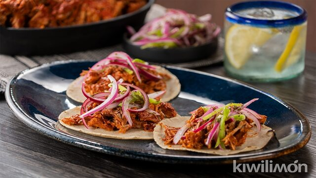
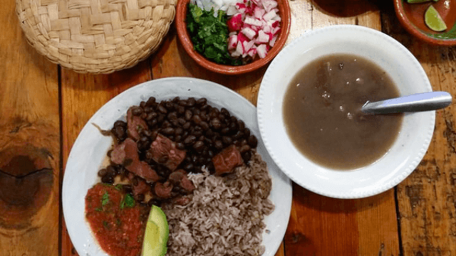
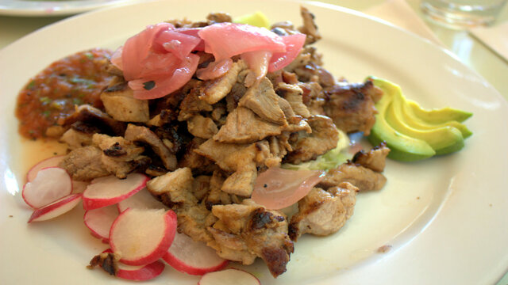
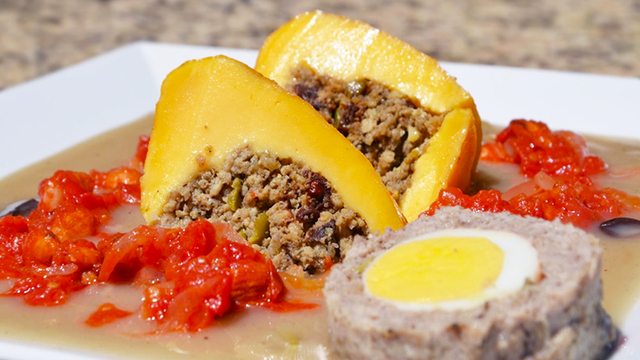
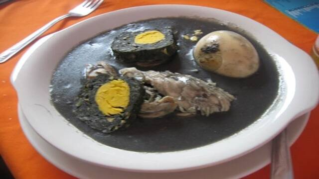

Brief History of the City
Before the arrival of the Spanish, this territory was known by the Mayans as T’ho, which means "Five hills", and long ago it received the name Ichcaanzihó, which means "face of infinity." On the vestiges of said Mayan settlement, the city was founded on January 6, 1542 by Don Francisco de Montejo "El Mozo", who named it Mérida because the old pre-Hispanic buildings reminded him of the Roman ruins that are preserved in the homonymous city. from Extremadura, Spain.
The center of the city was reserved for the Plaza Mayor and the sacred stones of the indigenous temples were used to build the houses and public buildings for the conquerors, such as the Royal Houses and the Cabildo, as well as the temples of the new Christian faith. , among which the Cathedral of San Ildefonso stands out.
Mérida is characterized by its colonial architecture, in a sober style, where there are buildings with high ceilings and large windows (predominantly in the current Historic Center); But above all, it is recognized for the color of the quarry, a material typical of the region with which many of its buildings were built, which makes the sunlight stand out even more, an aspect that has earned it the nickname of Ciudad Blanca in our days. , a fact also supported by the tradition of its inhabitants, maintained for many years, of using bright colors to paint their properties.
Main attractions
- Cathedral of San Ildefonso
- Montejo House
- Government Palace
- Olimpo Cultural Center
- City Hall
- José Peón Contreras Theater
- Autonomous University of Yucatán (UADY)
- Paseo de Montejo
- Regional Museum of Anthropology and History (Canton Palace)
- Monument to the Fatherland
You can read more about this beautiful city in the next link.
My favorite foods from Mérida
I have plenty of food that I like from my city, but personally I would recommend the next ones:
| Dish | Description | Picture |
|---|---|---|
| Cochinita Pibil | It is based on pork marinated in achiote, wrapped in a banana leaf and cooked in an earth oven. |  |
| Frijol con Puerco | It is a simple dish of chopped pork, which is cooked in a broth of black beans, epazote and spices. |  |
| Poc Chuc | It is filleted pork meat (preferably the loin) and marinated in sour orange, garlic and pepper, which is grilled over charcoal, on a griddle or grill. |  |
| Queso Relleno | It consists of a piece of ball cheese (Edam Type) hollowed out and stuffed with minced meat, and presented in a wheat flour sauce called Kol and tomato sauce. |  |
| Relleno Negro | It is prepared using turkey, pork and chili mix (chilmole). |  |